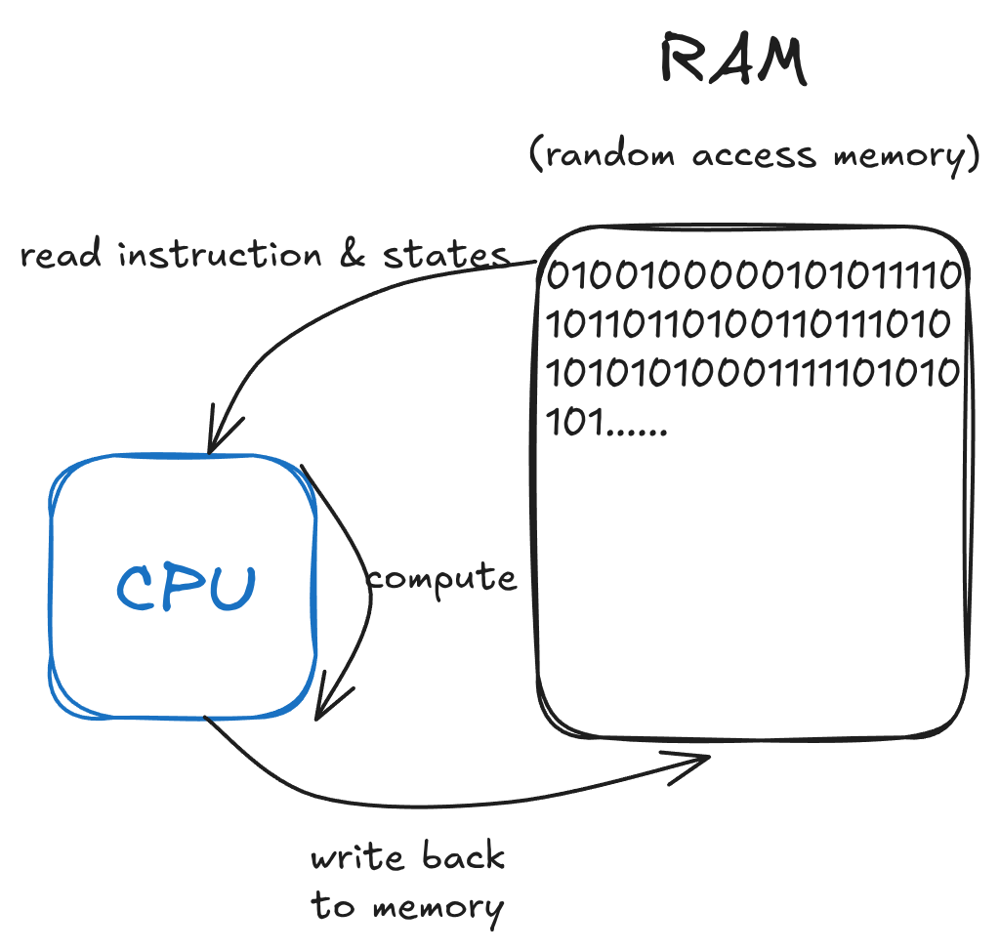

<div style="display: flex; justify-content: center; align-items: center; height: 700px;"> <div style="text-align: center; padding: 40px; background-color: white; border: 2px solid rgb(0, 63, 163); border-radius: 20px; box-shadow: 0 0 20px rgba(0,0,0,0.1);"> <h1 style="font-size: 48px; font-weight: bold; margin-bottom: 20px; color: #333;">CS110 Unofficial Review</h1> <p style="font-size: 24px; color: #666;">C, Memory, Compile, Assemble, Link & Load</p> <p style="font-size: 16px; color: #999; margin-top: 20px;">Hengyu Ai | 2025-04-07 </p> </div> </div> <!--s--> <div class="middle center"> <div style="width: 100%"> # Part.0 Computer Architecture Overview </div> </div <!--v--> ## What is a Computer? - Things that are able to compute. <!-- .element: class="fragment" --> - So, what is compute? <!-- .element: class="fragment" --> - <span class="fragment"> It's a long story... ([computability](https://en.wikipedia.org/wiki/Computability)) </span> - <span class="fragment"> The most famous one: [Turing Machine](https://en.wikipedia.org/wiki/Turing_machine) </span> <ul> <li class="fragment"> Turing machine revealed that <b>states</b> and <b>transitions</b> are the essence of computation. </li> </ul> <div class="fragment"> - States: lecture 2 "Everything is a Number", all states are represented by bits. - Transitions: some specific rules. e.g. 算盘： - States: 算珠的位置 - Transitions: 计算口诀 </div> <!--v--> ## Von Neumann Architecture - 其实，状态和转移可以放在一起 `==>` 内存 - 打算盘的人 `==>` CPU - 计算口诀 `==>` 指令集 A Minimal Computer <p></p> <!--v--> ## Everything in CA is About State Machine - Binary, floating point: how to represent structured states with birs - RISC-V: how to add more transitions - Digital circuits, datapath: how to actually make transitions accroding to states - Cache, superscalar: how to make faster transition - ... <!--s--> <div class="middle center"> <div style="width: 100%"> # Part.1 CALL </div> </div> <!--v--> ## From the Concrete Things Great Idea 1: Abstraction 什么是“抽象 (Abstraction)”: **我不关心** ```python a, b = b, a ``` <!-- .element: class="fragment" --> ```c Tuple tmp = makeTuple(a, b); b = tmp.first; a = tmp.second; ``` <!-- .element: class="fragment" --> ```asm lw ... sw ... ``` <!-- .element: class="fragment" --> <div class="fragment"> Centipede math: 把蜈蚣的腿拔到只剩下一两条，看它还能做什么 </div> <div class="fragment"> Abstraction: 不关心其中的一些部分，只在乎其他部分能做什么 </div> <!--v--> ## C **was** a Low-level Language Now it's not. [C Is Not a Low-level Language - Your computer is not a fast PDP-11.](https://queue.acm.org/detail.cfm?id=3212479) C is high-level, you can see a lot of things we'll cover in CS110 but not in C: cache, branch prediction, SIMD, OS memory model... </br> Why knowing C is "high-level" matters? <!-- .element: class="fragment" --> <div class="fragment"> - Low-level $\ne$ Fast - C/C++ $\ne$ Actual computer - High-level = More restrictions = More optimizations, e.g. [Rust png decoder](https://www.reddit.com/r/rust/comments/1ha7uyi/memorysafe_png_decoders_now_vastly_outperform_c/) - Great Idea 2, 3: Moore’s Law, Amdahl’s Law - Low level things have developed, but C is still what it was </div> <!--v--> ## Bottom Up Approach > Current abstraction layer: machine language The program is in the memory, and the CPU reads the program from memory and executes it. To make a larger program, we **combine** components together (reuse). <div class="fragment"> Disadvantages of machine language: - The address is hard coded, inserting a new instruction will break the program - ..., a code snippet is not reusable by simple copy-pasting </div> <!--v--> ## Bottom Up Approach (Cont'd) > Current abstraction layer: assembly language The program is in the form of lists of instructions, containing labels representing unknown addresses. To combine components together, we add labels. **Abstractions**: remove absolute address <div class="fragment"> Disadvantages of assembly language: - only a few registers - annoying stack manipulations </div> <!--v--> ## Bottom Up Approach (Cont'd) > Current abstraction layer: C The program is a set of complex expressions. **Abstractions**: remove registers, stack, calling conventions... <div class="fragment"> What's more? - Crazier control flow: exceptions, coroutines, async/await, continuations, etc. - Immutability: pure functions are easier to compose </div> <!--v--> ## Top Down Approach Bottom up approach shows how programming evolved, now we'll see how a program is executed. Now we have a program in C, how to run it? </br> <div class="fragment"> Walk down the abstractions: - Compile: C to assembly - Assemble: assembly to machine code (with unresolved labels) - Link: machine code to executable (still some unresolved labels) - Load: load the executable into memory (finally resolved) </div> <!--v--> ## Top Down Approach (Cont'd) > Current stage: compiling - Preprocessing: commandss starting with `#` are preprocessed (e.g. `#include`, `#define`) - lexing: C code is broken into tokens - parsing: tokens are grouped into abstract syntax tree - semantic analysis: check the syntax and semantics of the code - optimization: optimize the code - code generation: generate assembly For further details, see [CS131](https://faculty.sist.shanghaitech.edu.cn/cs131/) <!--v--> ## Top Down Approach (Cont'd) > Current stage: assembling - The assembler takes the assembly code and generates machine code - Since (sometimes) we don't know where the code will be, we need PC-relative addressing - Some symbols are still unresolved (e.g. `printf`) - Directives: - `.text`: Put subsequent items in the user Text segment (machine code) - `.data`: Put subsequent items in user Data segment (source file data in binary) - `.globl sym`: Declares sym global and can be referenced from other files - `.string str`: Store the string str in memory and null-terminate it - `.word`, `.byte`: Store specified number of bytes in memory <!--v--> ## Top Down Approach (Cont'd) > Current stage: assembling, executable file What's in the object file? - Object file header: size/position of other pieces of the object file - Text segment: machine code - Data segment: static data (e.g. stupid competitive programming style code `int a[100000000] = {1};`) - Symbol table: list of files' labels, static data can be referenced by other programs - Relocation table: Code to be fixed later (by linker) - Debugging info. <!--v--> ## Top Down Approach (Cont'd) > Current stage: where is linking? Linking is done in every stage. <!-- .element: class="fragment" --> <div class="fragment"> - When assembling, the assembler will resolve some labels - When linking many object files, the linker will resolve some remaining labels - When loading, the loader will resolve some remaining labels - When running, we can add some more libraries </div> <!--v--> ## Top Down Approach (Cont'd) > Current stage: linking Example: sum.c: ```c int sum(int *a, int n) { // add up all elements in a } ``` main.c: ```c int sum(int *a, int n); int array[2] = {14, 54}; int main(void) { int val = sum(array, 2); return val; } ``` <!-- 链接的过程实际上是为了解决多个文件之间符号引用的问题(symbol resolution)。编译时编译器只对单个文件进行处理，如果该文件里面需要引用到其他文件中的符号（例如全局变量或者函数），那么这时在这个文件中该符号的地址是没法确定的，只能等链接器把所有的目标文件连接到一起的时候才能确定最终的地址。 比如说这里的两个 .c 文件会被编译成 .o 文件，链接的时候，链接器会去找把 sum.o 和 main.o 的内容拼在一起，是重新定位的拼接，例如之前看 ELF 中，两个 text 段都在 data 段前面，最后合并出来的 ELF 里面就需要把两个 text 段拼在一起，放在两个拼起来的 data 段前面。 在重新放置这些段之后，链接器会把所有的符号都合并，比如说 sum.o 里面的 sum 函数和 main.o 里面的 sum 函数会被合并成一个函数. 这时候哪些地址会被重新定位呢？ PC-relative，比如说 beq, bne, auipc, 这些在单个 object file 内处理符号的时候已经解析完了，不需要修改 外部函数，比如说前面的 sum 函数，在链接的时候会被解析成具体地址 静态数据，比如一个巨大全局数组或者 string literal，这些在多个模块重定位后，需要重新计算位置。 --> <!--v--> ## Top Down Approach (Cont'd) > Current stage: dynamic linking libc functions, e.g. `printf`, are universally used, so we don't want it to take up too much memory. Therefore, when loading, we can load the library into memory and link it to the program. <!--s--> <div class="middle center"> <div style="width: 100%"> # Part.2 Memory </div> </div> <!--v--> ## Too Many Errors in the Slides <!--s--> <div style="display: flex; justify-content: center; align-items: center; height: 700px; "> <div style="text-align: center; padding: 40px; background-color: white; border-radius: 20px; box-shadow: 0 0 20px rgba(0,0,0,0.1);"> <div style="display: inline-block; padding: 20px 40px; border-radius: 10 px; margin-bottom: 20px;"> <h1 style="font-size: 48px; font-weight: bold; margin: 0; color: rgb(16, 33, 89)">Thanks for Listening</h1> </div> <p style="font-size: 24px; color: #666; margin: 0;">Any questions?</p> </div> </div>